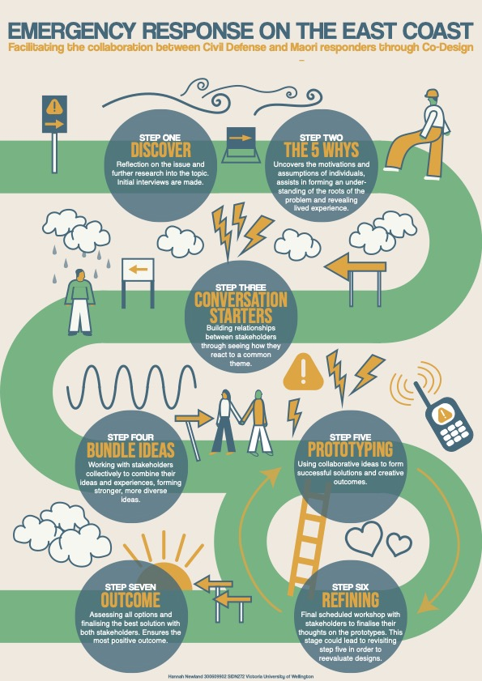

My Plan:
Emergency Response on the East Coast - Facilitating the Collaboration between Civil Defense and Māori Responders through Co-Design.
An Essay I wrote for Co-Design I, Visual below.
While Tairāwhiti on the East Coast of Aotearoa is the first part of the world to see the New Year, they are also frequently the first place impacted by climate change powered weather events. With a population that is primarily Māori and a region that is mostly rural, Tui Warmenhoven, the chairperson of the board of Greenpeace Aotearoa describes Tairāwhiti as “...on the whole, a dispersed, less well-off community facing weather events we have no control over.” (2023). Considering the magnitude of the issue on the East Coast, particularly Tairāwhiti, it’s frustrating to learn through my research that the emergency response from government agencies such as Civil Defense following recent weather events such as Cyclone Hale and Cyclone Gabrielle, which saw Tairāwhiti experiencing almost 560mm of rain in 36 hours (Morton, 2023), has disappointed residents affected by the storms, while non-government groups have had to pick up the slack or take control in areas where Civil Defense weren’t strong.
De Silva (2023) details how the local Māori radio stations played a huge part in Tairāwhiti’s cyclone response strategy, stating they had “committed to broadcasting 24 hours a day during the cyclone with the latest information – interrupted only by conditions outside of their control, like power outages”, and compared them to mainstream radio stations who did not “feature as prominently and promptly as the Māori stations”, despite the fact they have “considerably more resources and staff”. It puts into perspective the effort put in by Māori stations to get out official information from Civil Defense, compared to that of the government funded stations like RNZ.
Along with discussing the Māori radio stations, De Silva (2023) also acknowledges the benignancy of tangata whenua, with local marae making up over half of the welfare centres set up in the region.
This poses the question: if this is the best emergency response possible from two stakeholders (Civil Defense and Māori responders) working almost separately, what would the response look like if they worked together, and how can that collaboration be facilitated?
“Co-design challenges the power of individuals who make important decisions about others’ lives, livelihoods and bodies” (K.A. McKercher, 2020). Facilitating a collaboration between Civil Defense and Māori responders would mean first understanding the power imbalances and cultural differences between the two stakeholders. Between these two groups, the power currently lies primarily with Civil Defense and the government agencies it is linked to, which has full control over the responses that are made following an emergency in Tairāwhiti. As well as power imbalances, cultural differences, which can be linked to the imbalance of power between the two groups, needs to be acknowledged. “Manaakitanga dictates that tangata whenua (the marae) must extend their resources to their manuhiri (the locals in danger)” (De Silva, 2023). A significant factor in the Māori response in Tairāwhiti stems from Manaakitanga, from their culture and their beliefs, whereas from an outsider’s perspective the Civil Defense are paid employees being told what to do by local and national governments.
To achieve a constructive co-design environment, I think the participants involved would need to be 60% Māori responders, 40% Civil Defense. While I can acknowledge the intention is to facilitate a balanced collaboration between the two groups, I think it’s important to level out the power imbalance by introducing a higher percentage of Māori responders considering the significant differences in power each party holds, so there is no opportunity for one group to overpower another. I also think the environment needs to be a neutral location, separate from places that are of significance to one stakeholder and not to another. It’s important to maintain a diverse range of responsibilities within each group, so it doesn’t consist entirely of, for example, higher paid employees from Civil Defense, and ensures the individuals from each group have unique experiences and motivations.
Co-design in the form of workshops will be utilised to build a relationship between the stakeholders, and find a common ground of understanding. Working to first establish these relationships will contribute to a comfortable environment where people will feel encouraged to make meaningful input.
The workshops will begin following initial interviews with participants to understand their individual viewpoints. ‘The Five Whys’ will uncover the motivations and assumptions of each stakeholder, while assisting in forming an understanding within the group of participants of the root of the issue, and establishing shared lived experiences by asking broad questions multiple times to find an answer for complicated problems.
This will be followed by ‘Conversation Starters’, taking common themes from the previous tool, as well as forming new conversation starters, and building relationships between the stakeholders through seeing how they react to those common themes. A participant from Civil Defense might speak about a common theme and participants from the other group could find some relatability in their answer.
The third workshop, ‘Bundle Ideas’, involves working with the stakeholders collectively to combine their ideas and experiences, forming stronger, more diverse ideas. This is a helpful tool leading up to prototyping because you are provided with collaborative ideas and answers from two groups that started the co-design process with polarising ideas, so there is a broad range of lived experiences that worked to create those diverse ideas.
Following the prototyping stage, it’s important to hold a final workshop with the stakeholders to finalise their thoughts on the prototypes, and establish whether or not the prototypes need to be revisited in order to create the best possible solution for both stakeholders, and the most positive outcome.
In terms of reviewing and adapting the co-design process, feedback from participants after each workshop will ensure whether the approaches that are being made are actually helpful and progressive. The most important part of this process is establishing those relationships between Civil Defense and Māori responders so that they can leave the final workshop with maintainable relationships. Learning through collaboration will create a stronger emergency response in Tairāwhiti because of the relationships formed and grown during the co-design process.
Warmenhoven, T. (2023, 27 January). Cyclone Hale: this is what the climate crisis looks like. Greenpeace Aotearoa. https://www.greenpeace.org/aotearoa/story/cyclone-hale-this-is-what-the-climate-crisis-looks-like/ De Silva, T. (2023, February 14). In Gisborne’s blackout, the Māori response shone brightly. The Spinoff. https://thespinoff.co.nz/atea/14-02-2023/in-gisbornes-blackout-the-maori-response-shone-brightly McKercher, KA (2020). What is co-design? A brief overview. Beyond Sticky Notes. https://www.beyondstickynotes.com/what-is-codesign Morton, J. (2023, 15 February). Deconstructing Gabrielle: The Making of a Monster Storm. New Zealand Herald. https://www.nzherald.co.nz/nz/deconstructing-gabrielle-the-making-of-a-monster-storm/IL4BMH6BQZBB7KSDF7ZXVW5ELU/